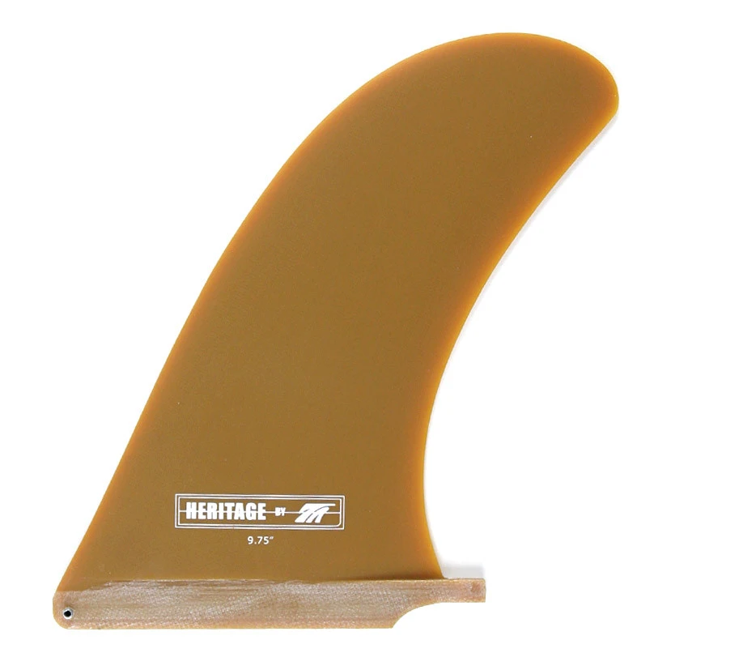

Single Fins
Greenough 4a
California Classic
Herritage
D-Fin
The Heritage is built for those who are most interested in longboarding in the style of past eras... Leaning way back and pivoting from the tail, finding that perfect trim, and getting locked in on the nose.
Our tribute to what Bing & Rick brought to surfboards a long time ago, this fin falls into the category of being an ‘instant classic.’ This template is perfectly at home on traditional style longboards and heavy square tails.
Step way back, drop knee turn, cross-step, noseride, repeat….

Sizes:
9.75" 10.25" 10.75"
E-Glass:
E-glass has excellent flex characteristics and performance longevity, while featuring the bonus of outstanding color vibrancy that allows for the variety of colors we offer.
Made in Santa Barbara